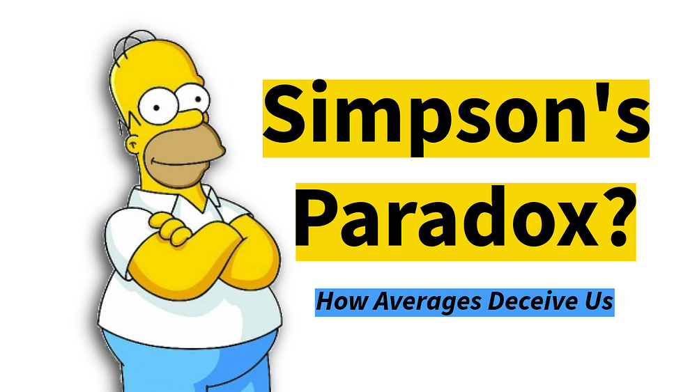
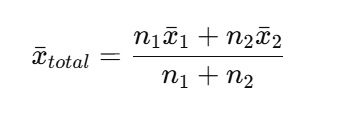
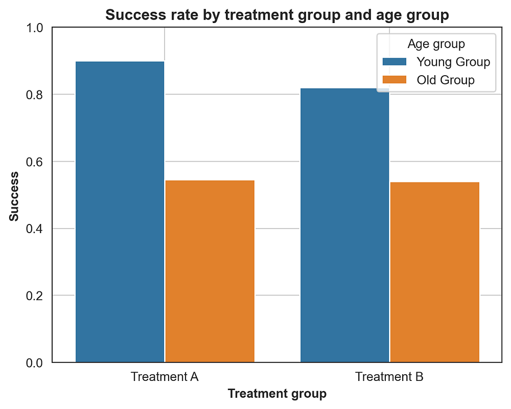
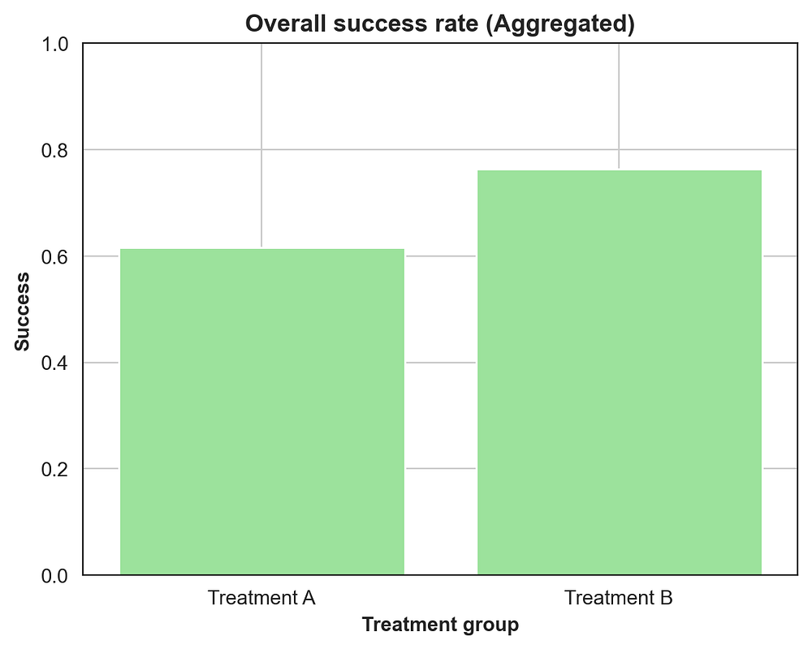
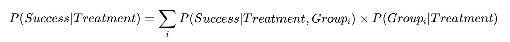
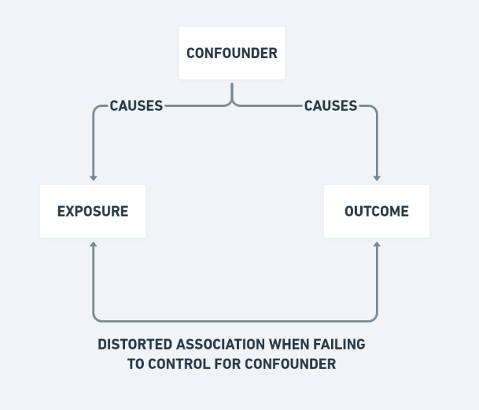

Introduction
Imagine this: you are analysing data for a company's customer satisfaction survey. Last quarter, the overall satisfaction score dropped. But when you split the data by user type (new and existing customers), you find something strange: both groups individually show higher satisfaction than before.
How can everyone be happier, yet the average goes down?
The answer is a statistical trap called Simpson's Paradox, where trends that appear in separate groups disappear or even reverse when the groups are combined.

When averages betray you
Now imagine you are presenting these results. You show the leadership team that both new and existing customers' satisfaction improved. They smile. Then you show the overall average, and suddenly it is worse.
Someone questions your SQL query. Another blames a data refresh. But the data is correct: the summary is misleading your intuition.
This happens because mixing groups of different sizes distorts the combined picture. The overall trend says one thing, the subgroups say another, and both are correct.
It is not that the data is wrong. You are looking at it from too far away.
Think of two roads both sloping uphill. If you build a bridge connecting them, that bridge can slope downhill even though both roads rise. Merging groups with uneven weights in data does the same thing.
Why does it happen?
When you combine two groups, you do not just average the averages. You weight each average by the group's size.
The combined mean looks like this:

Where:
- n1, n2 = number of observations in each group
- x1_bar, x2_bar = average for each group
The larger the group, the more it drags the overall mean toward itself. Here is a small example:
| Group | Avg. Satisfaction (Last Quarter) | Avg. Satisfaction (This Quarter) | Change |
|---|---|---|---|
| New Users | 6.0 | 7.0 | +1.0 |
| Existing Users | 8.0 | 8.5 | +0.5 |
| Overall | 7.5 | 7.2 | -0.3 |
How can this happen? There are now far more new users, who start with lower scores. The increase in their numbers drags down the overall average, even though both groups individually improved. That imbalance of group sizes and base rates is what creates Simpson's Paradox.
Demonstration
Here is Simpson's Paradox in a simple simulated experiment:
Two treatments (A and B) are tested on two groups (Young and Old). Within each group, Treatment A performs better than B. But we assign A mostly to older patients, who naturally have lower success rates. That imbalance flips the overall result when we aggregate the data.
Exhibits A: Success rate by group

Barplot for success rate by treatment and age group. A outperforms B in both groups individually.
| AgeGroup | A | B |
|---|---|---|
| Young | 0.90 | 0.80 |
| Old | 0.60 | 0.50 |
Within each age group, A has a higher success rate.
Exhibits B: Overall success rate (aggregated)

When you ignore age, the aggregate data makes B look better.
| Treatment | Success Rate |
|---|---|
| A | 0.65 |
| B | 0.75 |
Combine all patients, and B appears better overall even though A won both subgroups.
The math behind the illusion
When we aggregate, we are effectively doing a weighted average. The key term is P(Group i | Treatment), the mix of groups under each treatment.

If Treatment A has more Old patients, its overall probability of success gets pulled down even if it outperforms B within every group.
That is why statisticians control for confounders and why unadjusted aggregates can be misleading.

(Image credits: https://www.ztable.net/confounding-variable/)Real-world parallels
This paradox has turned up in real analyses for decades.
- University Admissions (Berkeley, 1973). Women seemed to have a lower overall acceptance rate. Broken down by department, women were admitted at higher rates in most departments. The bias came from women applying to more competitive programs.
- Medical Treatments. A drug may appear less effective overall because it is prescribed to patients with more severe conditions.
- Sports Analytics. A baseball player's batting average might be lower overall, yet higher against both left- and right-handed pitchers separately.
What does it teach us?
Before you trust an aggregate, check the subgroups and control for confounding variables. Ask what else could be driving the trend. Data alone doesn't reveal the truth, interpretation does, so always pair your numbers with good context.
Conclusion
Every number can be right and the story can still be wrong. That is what makes Simpson's Paradox so useful. It does not break math, it exposes our blind spots. When a trend surprises you, ask what happens if you split the data one layer deeper. That is often where the real explanation lives.
If you want to experiment with this yourself, check out the interactive notebook.
About the Author
I'm a Data Scientist who enjoys breaking down complex statistical concepts and cybersecurity risks. If you found this breakdown of Simpson's Paradox helpful, check out my other blogs or explore my Ship of Theseus project where I visualize codebase entropy.
Thank you!